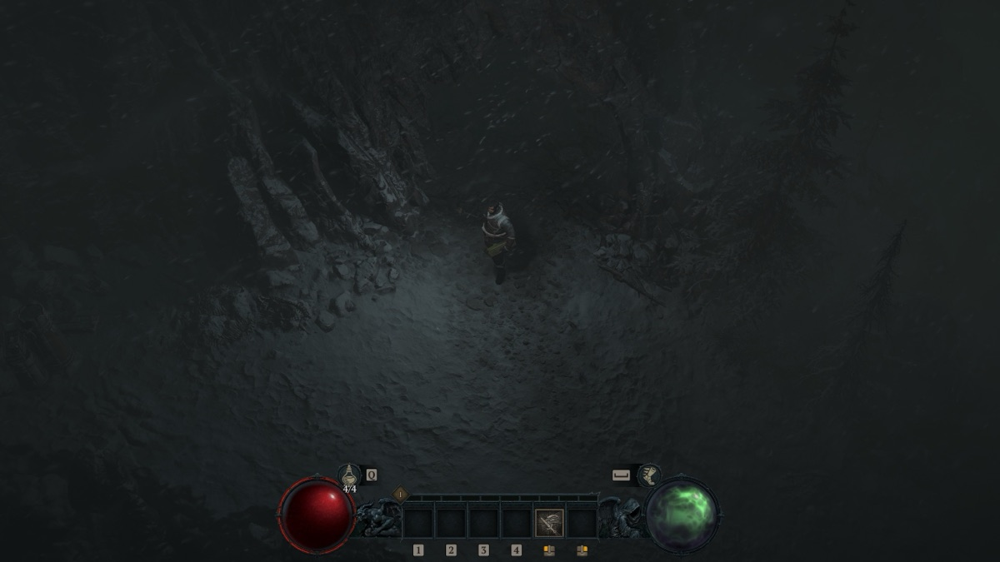

소주는 애플 실리콘 맥에 공식 윈도우 게임 런처를 설치하는 무료 오픈소스 앱입니다.
디아블로 4 맥에서 하기
소주에서 됨
블리자드 무료 체험판으로 M4 Pro, macOS 26.5에서 실행했습니다. 오프닝 영상이 나오고, 캐릭터를 만들고, 첫 지역에 들어가 캐릭터가 움직이는 것까지 확인했습니다. Direct3D 12를 애플 D3DMetal로 돌립니다. 배틀넷 표시 용량은 고해상도 에셋 제외 97.4GB(포함 181GB)이고, 다운로드 73%쯤에서 Play가 켜졌습니다. 소리, 프레임, 전투, 장시간 플레이는 확인하지 않았습니다.


리눅스(Proton) 참고: 최근 2년 사용자 보고 189건 중 152건이 실행된다고 했습니다 (ProtonDB, 2026-11-02 기준, ODbL).
| 런처 | Battle.net |
|---|---|
| 상태 | 소주에서 됨 |
| 날짜 | 2026-11-11, M4 Pro · macOS 26.5에서 실행 |
소주로 해 보는 방법
brew install BCD1210/soju/soju
soju install # Battle.net 선택
soju battlenet # 로그인 → 게임 설치 → 플레이또는 소주 앱을 받아 플랫폼에서 Battle.net을(를) 설치하세요. 애플 실리콘(M1 이상), macOS 14 이상이 필요합니다.
해 보셨나요? 디스코드 한국어 채널나 호환성 보고로 알려 주시면 이 페이지에 반영합니다.
자주 묻는 질문
애플 실리콘 맥에서 디아블로 4 되나요?
소주에서 됨. 블리자드 무료 체험판으로 M4 Pro, macOS 26.5에서 실행했습니다. 오프닝 영상이 나오고, 캐릭터를 만들고, 첫 지역에 들어가 캐릭터가 움직이는 것까지 확인했습니다. Direct3D 12를 애플 D3DMetal로 돌립니다. 배틀넷 표시 용량은 고해상도 에셋 제외 97.4GB(포함 181GB)이고, 다운로드 73%쯤에서 Play가 켜졌습니다. 소리, 프레임, 전투, 장시간 플레이는 확인하지 않았습니다.
맥에서 디아블로 4을(를) 어떻게 설치하나요?
무료 오픈소스 앱 소주로 윈도우용 Battle.net을(를) 설치하고, 로그인한 뒤 게임을 설치해 실행합니다.